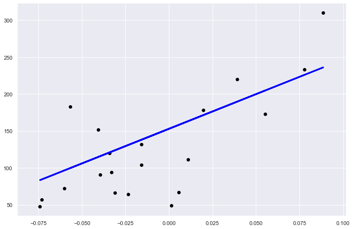

Linear models
- A Simple Linear Regression Example (source)
This example uses the only the first feature of the diabetes dataset, in
order to illustrate a two-dimensional plot of this regression technique. The
straight line can be seen in the plot, showing how linear regression attempts
to draw a straight line that will best minimize the residual sum of squares
between the observed responses in the dataset, and the responses predicted by
the linear approximation.
The coefficients, the residual sum of squares and the variance score are also
calculated.
import numpy as np from sklearn import datasets, linear_model
- Import Diabetes Dataset
diabetes = datasets.load_diabetes() '''Use only one feature''' diabetes_X = diabetes.data[:, np.newaxis, 2]
- Split Dataset to Train and Test
'''Split the data into training/testing sets''' diabetes_X_train = diabetes_X[:-20] diabetes_X_test = diabetes_X[-20:] '''Split the targets into training/testing sets''' diabetes_y_train = diabetes.target[:-20] diabetes_y_test = diabetes.target[-20:]
- Fit the Model
'''Create linear regression object''' regr = linear_model.LinearRegression() '''Train the model using the training sets''' regr.fit(diabetes_X_train, diabetes_y_train)
LinearRegression(copy_X=True, fit_intercept=True, n_jobs=None, normalize=False)
- Calculate Regression cofficient, Mean Squared Error and Variance score.
'''The coefficients''' print('Coefficients: \n', regr.coef_) '''The mean squared error''' print("Mean squared error: %.2f" % np.mean((regr.predict(diabetes_X_test) - diabetes_y_test) ** 2)) '''Explained variance score: 1 is perfect prediction''' print('Variance score: %.2f' % regr.score(diabetes_X_test, diabetes_y_test))
Coefficients: [938.23786125] Mean squared error: 2548.07 Variance score: 0.47
import matplotlib.pyplot as plt import seaborn as sns sns.set()
'''Plot outputs''' plt.figure(figsize = [12,8]) plt.scatter(diabetes_X_test,\ diabetes_y_test,\ color='black') plt.plot(diabetes_X_test,\ regr.predict(diabetes_X_test),\ color='blue', linewidth=3) plt.grid(True) plt.show()
